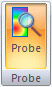
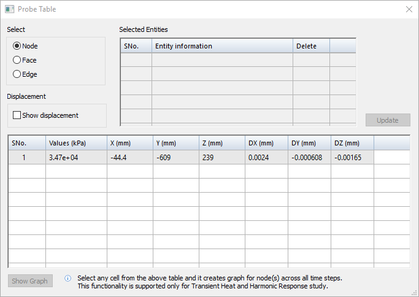
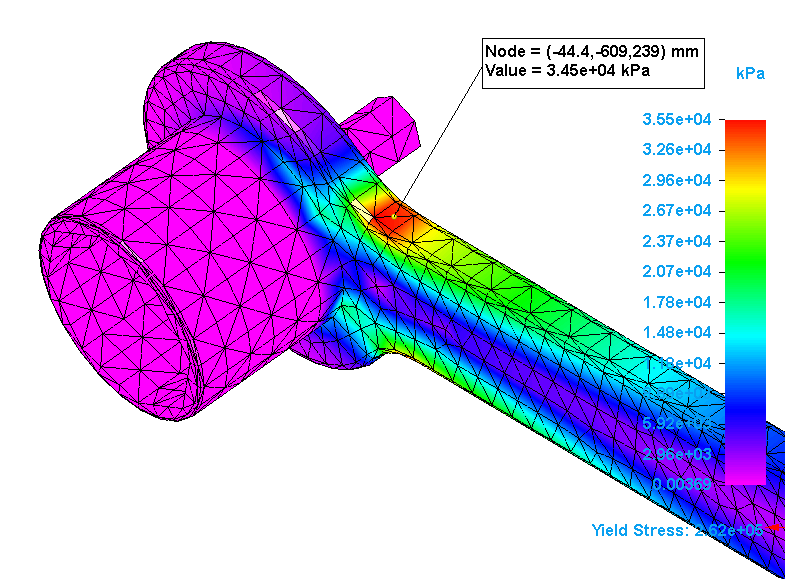
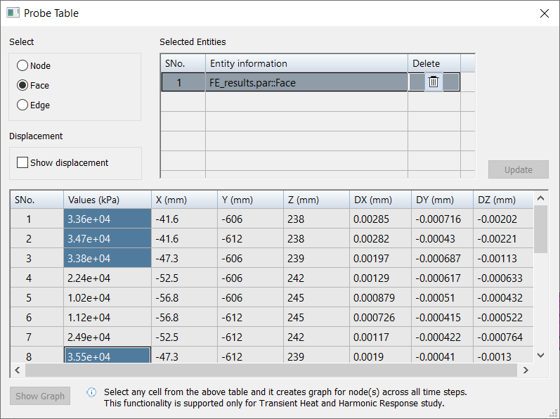
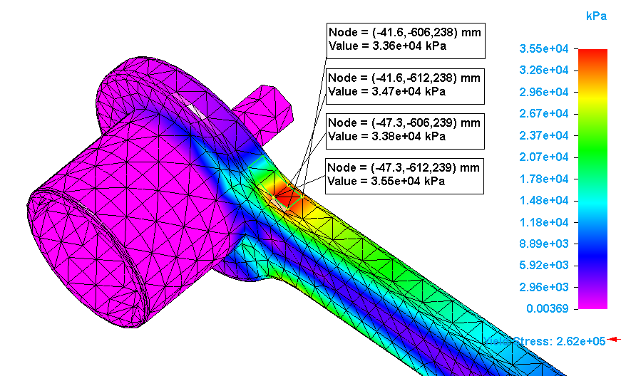

Display node analysis data
Use the Probe command to display detailed analysis data about individual geometry nodes at the intersection of mesh elements. You can choose to display the stress values node-by-node, or you can display all values on a selected face or edge.
-
In the Simulation Results environment, from the Color Bar tab→Format group, select the numeric value display format and number of decimal places you want to use to display node values in the Probe Table, the node data labels, and on the color bar.
Tip:To have Solid Edge Simulation automatically select the best possible format, set Number Format to Automatic. For more information, see Using the color bar.
-
Choose Home tab→Probe group→Probe.

An empty Probe Table is displayed.
-
To show the DX, DY, DZ relative displacement values in the probe labels, in addition to the X, Y, Z node location, click Show displacement.
-
In the Probe Table, under Select, choose how you want to identify stress values on the model:
-
Node—Examine one or more individual nodes in a high-stress area on the model, guided by the color scale on the color bar.
-
Face—Populate the table with all of the node data for a specific face.
-
Edge—Populate the table with all of the node data for a specific edge.
Note:-
Face and edge selection are not available for structural frame models.
-
Study results must be current to be able to probe edges. If the Edge option is not available, the study results are out-of-date. Close the Simulation Results environment and solve the study.
-
-
Continue with the following steps, based on your selection method. You can interact with the table data as long as the table is open.
If you change the selection mode, the Probe Table is emptied of all data.
To examine one or more individual nodes in a high-stress area on the model
-
Click a node at a vertex on the model. Move the cursor to position the label and click to place it.
Nodes are the yellow dots you see as you move your cursor over the model.
The node data is added to the table, and the node data callout is displayed in the simulation results.


-
Continue clicking nodes and placing labels on the model.
To populate the table with all of the node data for a specific face or edge
If you selected the Faces option or the Edges option, continue with the following steps:
-
On the model, click one or more faces or edges.
The name of each selected face or edge is added to the Selected Entities list in the Probe Table. You can match face names to faces on the model by clicking individual names in the Selected Entities list. To remove an entity from the list, click the adjacent Delete button .
-
Click the Update button to load the data into the Probe Table.
-
In the Values column, click a cell to see where it is located on the model.
-
Shift+click to select a range of cells.
-
Ctrl+click to select each additional cell.
-
Click a column header to select all of the cells in that column.
Stress values are listed in the Values column. To sort the values from highest to lowest, right-click the column header and choose Sort→Descending.

-
Probe labels are displayed on the model for all of the selected stress values.

-
After the data is displayed in the Probe Table, you can use the shortcut commands to change the font size, reorder the values in ascending or descending order, find a specific value, and copy (or Ctrl+C) then paste (Ctrl+V) information into another document.
-
If you are probing the results of a transient heat transfer study, you can see the changes in temperature at each node over time. If you are probing the results of a harmonic frequency response study, you can see the changes in displacement (translation) at each frequency.
Select up to 10 data cells in the table and then click the Show Graph button. For more information, see Define and review a transient heat study.